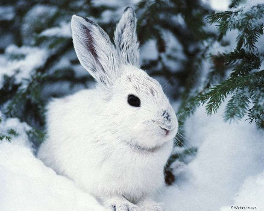

¿Cómo sobreviven los mamíferos en invierno?
Aunque la mayoría de las aves de los bosques del norte emigran hacia el sur en otoño, los mamíferos se quedan allí todo el año. Los ratones de campo y los lemmings, por ejemplo, se conservan calientes sin salir de los túneles que cavan bajo la nieve donde continúan alimentándose de líquenes, semillas y raíces tiernas. Los alces se abren paso a través de la nieve y ramonean brotes de abetos, sauces, hayas y álamos temblones; también la liebre americana se contenta con lo que encuentra, incluso acepta la picante picea, mientras que los puerco espines mordisquean cortezas y ramitas. Los predadores lobos, zorros, linces, martas y demás están siempre al acecho por si sale alguna presa.
Puede parecer que algunos animales en las fotos se están congelando, pero no sería totalmente cierto: en la mayoría de los casos, es probable que el fotógrafo esté pasando más frío que los animales a los que retrata. Los mamíferos como los zorros, gatos y demás animales peludos tienen que mantener una temperatura corporal constante, así que hacen acopio de grasa corporal y les crece un pelaje extra, que crea una capa de aire aislante entre su piel y el frío. Y a veces les sale hasta de color blanco, para ayudarles a camuflarse en el entorno nevado. Si tienes un perro adaptado al frío, un husky por ejemplo, sabes lo peludo que se puede volver todo cuando se les empieza a caer el pelaje invernal.

¿Qué animales adaptados al frío extremo existen?
Pueden vivir en los polos Antártico o Ártico, ya que, su piel, su tamaño o su cantidad de grasa acumulada, les permiten soportar mejor las condiciones extremas. Aunque parezca que esos sitios inhóspitos no albergan vida, lo cierto es que existen varios animales adaptados al ambiente.
Oso Polar
Es la única especie de oso con pelaje completamente blanco, al igual que el área donde vive. También es el único que se alimenta 100% de carne (focas mayormente). Tiene las patas desarrolladas para poder caminar o nadar distancias largas. Tanto las orejas como la cola son pequeñas, para evitar así que se pierda el calor corporal. Además, tiene un pelaje denso y una gran capa de grasa en todo el cuerpo. Si bien no hibernan, las hembras preñadas buscan refugio durante el invierno.
 Osos Polares
Osos PolaresZorro Artico
También conocido como zorro polar, se distribuye entre las tundras de Norteamérica y Eurasia. Posee orejas pequeñas, y una gran capa de pelo blanco para poder sobrevivir a temperaturas de hasta -50°C. Eso sí, cambia de color cuando llega el verano, y posee una gran cola peluda. Puede pesar hasta 9 kg, y permanece activo todo el año (no hiberna, migra a sitios menos fríos). Su principal alimento son las aves y los mamíferos pequeños.
 Zorro Artico
Zorro ArticoFoca
De todas las especies de foca, hay sólo algunas que viven en los climas fríos. Una de las más importantes es la de Groenlandia o Arpa. Su hábitat son los océanos Atlántico Norte y Glacial Ártico. Los adultos presentan una capa de color gris plateado, con rostro negro y una mancha oscura en la espalda. Las crías tienen pelaje blanco amarillento. Pasan poco tiempo en tierra firme, y viven en colonias.
Pinguino Emperador
La especie más grande de pingüinos vive en el fondo del mundo a -24 grados centígrados. A pesar de que se han adaptado al clima con la densidad más alta de cualquier especie de ave, todavía no es suficiente para combatir la estación más fría de la Antártida. Entonces, ¿qué hace un ave no voladora cuando no hay refugio en el hielo? Mantenerse lo más unidos que puedan.
Las colonias de pingüinos que se cuentan por miles forman grupos compactos, compartiendo el calor del cuerpo y el bloqueo del viento en el proceso. Y siendo el grupo comunal que es, hay una rotación constante de pingüinos del exterior del círculo hacia el centro, por lo que todo el mundo recibe un respiro de las duras condiciones.
 Pinguino Emperador
Pinguino EmperadorBallena Beluga
Cuando te pasas la vida en aguas árticas y subárticas, más vale que tengas una manera de mantener el calor. Para la ballena beluga, significa una muy gruesa capa de grasa. En promedio, una beluga de 16 pies tiene un embalaje de cinco pulgadas de capa gruesa de grasa, lo que representa alrededor del 40 por ciento de su peso total, el cuerpo con el más alto porcentaje de grasa en las especies de ballenas.
 Ballena Beluga
Ballena BelugaOrca
La orca (Orcinus orca), también conocida como ballena asesina, es uno de los cetáceos más conocidos del planeta. Tiene una fama inmerecida de animal peligroso, y un comportamiento fascinante, que se muestra en sus estrategias de caza.
Morsa
La morsa (Odobenus rosmarus) es una especie de mamífero pinnípedo semiacuático de gran tamaño que habita en los mares árticos.